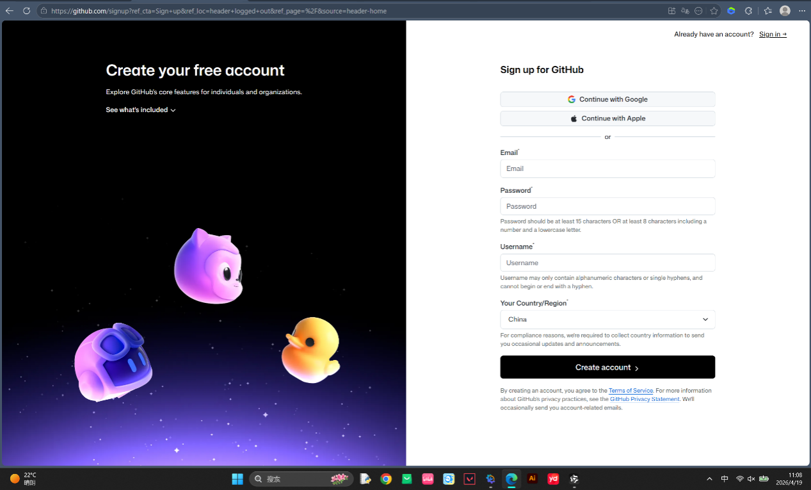
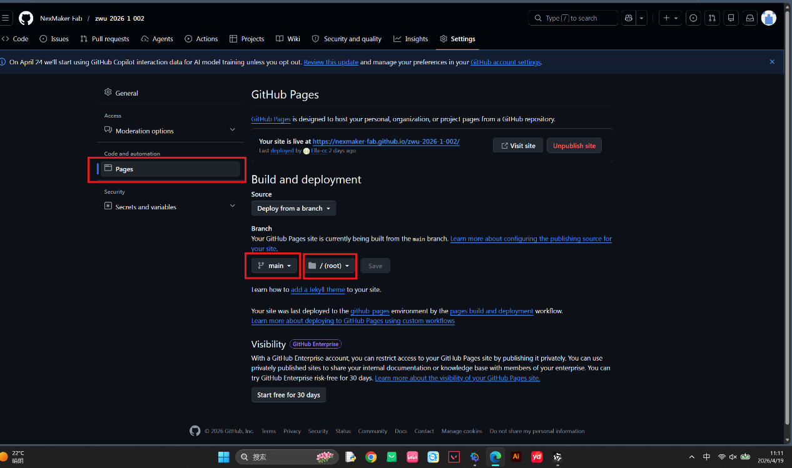
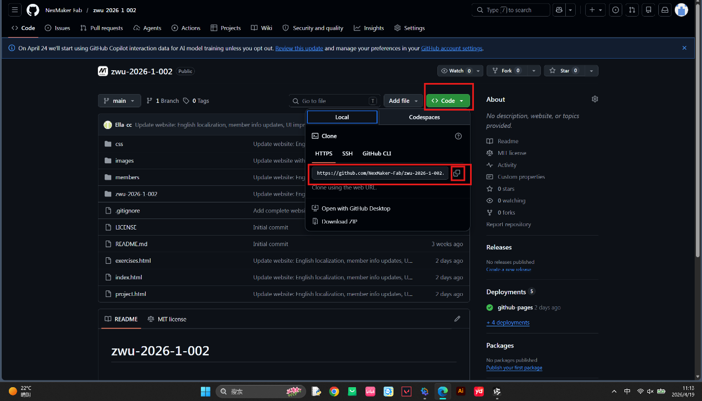
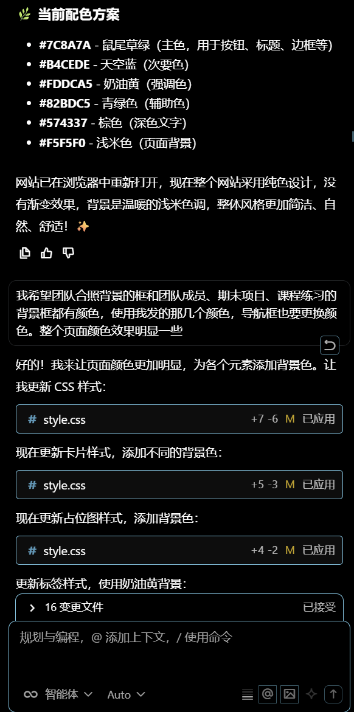
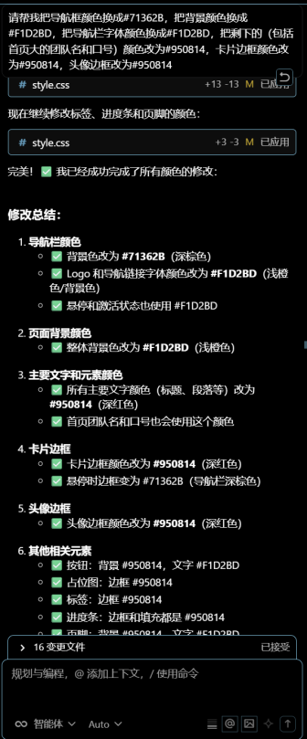
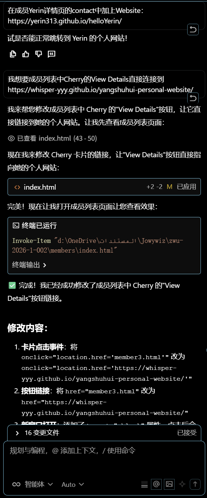
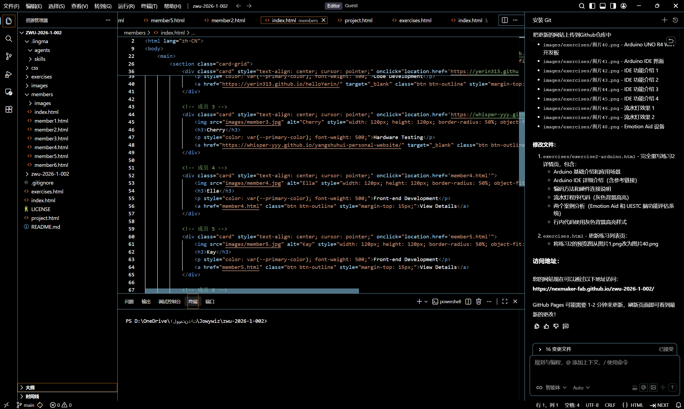

Exercise 1: From Git Installation to Team Website Deployment
Completion Time: April 2026 | System: Windows
Step 1: Download and Install Git
First, you need to download the installation package suitable for Windows from the official Git website.
- Open your browser and visit the Git official website: https://git-scm.com/
- Click the "Download for Windows" button

- After downloading, double-click to run the installer
- Follow the wizard prompts to install (recommended to use default settings)
Step 2: Create a Repository on GitHub
- Visit https://github.com/ and register an account (if you don't have one yet)

- After logging in, click the "+" icon in the top right corner and select "New repository"


- Repository name: Enter repository name (e.g., zwu-2026-1-002)
- Description: Optional, add repository description
- Public/Private: Choose public or private
- Add README: Select ON
- Add license: Select MIT License
- Click "Create repository" button
Step 3: Initialize Local Git Repository and Commit Code
Initialize Git in the project folder and commit all files to the local repository.
# Enter project directory
cd "d:\Desktop\ZWU2026\Team"
# Initialize Git repository
git init
# Create .gitignore file
echo ".lingma/" > .gitignore
# Add all files to staging area
git add .
# Commit changes
git commit -m "Initial commit: LifeTeam website"Step 4: Enable GitHub Pages to Deploy Website
- Visit your GitHub repository page
- Click the Settings tab at the top
- Find and click Pages in the left menu

- In the "Build and deployment" section:
- Source: Select "Deploy from a branch"
- Branch: Select "main"
- Folder: Select "/ (root)"
- Click Save button
- Wait 1-2 minutes, the website will be published
Access Your Website
After successful deployment, your website can be accessed via:

Step 5: Git Clone Remote Repository to Local (Recommended for Beginners)
Since we have already created an empty repository on GitHub, we can directly use the git clone command to download the repository to local, which will automatically complete the association without manually executing git remote add.
Operation Steps:
- Open the terminal in Lingma (in the top navigation bar - Terminal)
- Use the git clone command to clone the remote repository (replace the repository address below with your own)
git clone https://github.com/NexMaker-Fab/zwu-2026-1-002.git
After execution, the terminal will show 100% progress, indicating successful cloning. If it shows like the image above, it means it has been cloned before.
Step 6: Solve CSS Style Loading Issues
Problem Description
After uploading to GitHub Pages, found that the website's CSS styles did not load correctly, and the page displayed as pure HTML without any styling.
Problem: CSS File 404 Error
Symptom: Press F12 to open developer tools, and see style.css returning 404 error in the Network tab.
Cause: GitHub Pages URL includes subpath (/zwu-2026-1-002/), while HTML uses relative paths, causing the browser to fail to find the CSS file.
Solution
Add a <base> tag in the <head> section of all HTML files:
<head>
<meta charset="UTF-8">
<base href="/zwu-2026-1-002/">
<title>LifeTeam - Team Homepage</title>
<link rel="stylesheet" href="css/style.css">
</head>This way, all relative paths will automatically be based on the /zwu-2026-1-002/ base path.
Step 7: Use Lingma AI Assistant to Create Team Website
Operation Instructions
Use Lingma AI programming assistant to quickly generate team website code.
- Describe Requirements: Tell Lingma that you want to create a team showcase website, including:
- Team introduction
- Team member showcase
- Final project showcase
- Course practice records
Prompt Example:
I want to create a team showcase website. The team is called Jowywlz with 6 members. Please help me generate complete HTML code for the following pages, requiring unified style across all pages, Instagram-style design, with navigation bar for mutual navigation.
- Homepage (index.html) - Team Introduction Page
- Display team name: Jowywlz
- Team slogan: With code as spell, with creativity as staff
- Team photo placeholder (use a gray placeholder image, size 800x400)
- A "View Team Members" button below, linking to team member list page
- Team Member Overview Page (members/index.html)
- Use grid layout to display 6 members' avatars (gray circular placeholders), names, roles/responsibilities
- Each member's avatar and name clickable, navigating to their personal detail page
- Use filenames like member1.html, member2.html, I will fill in content one by one
- Member Personal Page Template (members/member1.html to member6.html)
- Each member page has same structure, including: avatar, name, role, personal introduction
- Since 6 people have different content, please help me generate a universal template, mark which places need manual replacement with comments
- Give me member1.html as example, tell me how to copy and modify into other 5 members
- Final Project Page (project.html)
- Display detailed information of "Final Project"
- Include: project name (placeholder), project introduction, technology stack tags, project screenshot placeholders, team member division of labor, project progress
- Course Exercise Page (exercises.html)
- Display course exercise list
- Each exercise includes: exercise name, brief description, a "View Details" placeholder button
- First give me 3 example exercises, I can add more later
- Common Requirements
- All pages have unified navigation bar at top: Home, Team Members, Final Project, Course Exercises
- Navigation bar should highlight current page
- Add simple copyright information at bottom of all pages
- Responsive design, works normally on both mobile and desktop
Please help me generate all required HTML files and CSS styles, and tell me how to organize the files.
- Generate Code: Lingma will automatically generate HTML, CSS, and JavaScript code
- Save Files: Save the generated code to the project folder
- Test and Debug: Open index.html in local browser to view effect


To try different color schemes, you can communicate directly with Lingma.
- Iterate and Optimize: Adjust content and style according to requirements
Usage Tips
- Describe your requirements as detailed as possible, including functions, styles, layouts, such as adding images, etc.


- You can ask Lingma to generate code for different parts step by step
- When encountering problems, send error messages directly to Lingma, it will help you solve them. Remember to select "Agent" mode
- You can let Lingma help you optimize code or add new features, including helping you upload the website to GitHub

Summary and Achievements
Completed Work
- ✅ Successfully installed and configured Git
- ✅ Created repository on GitHub
- ✅ Uploaded local code to GitHub
- ✅ Enabled GitHub Pages to deploy website
- ✅ Solved CSS path issues
- ✅ Used Lingma AI assistant to create team website
Knowledge Learned
- Basic Git operations: init, add, commit, push
- GitHub repository creation and management
- GitHub Pages configuration and usage
- Troubleshooting and solving HTML/CSS path issues
- How to use AI assistants to improve development efficiency
Next Steps
- Continue to improve team website content and functionality
- Explore backend development and database knowledge